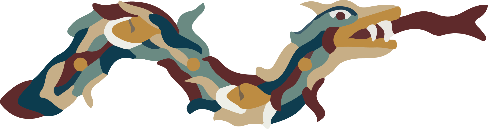

Welcome to TimekNot Standalone.

hello[120] <- world[10>>] 90tl*(2,2.1 til 4) | xoxoxxo[xx] :| hello.s = "bright sankoor" .n = 0 1 2 3 4 5 6 7 8 9 10 .pan = 0.5 * (0,0.1 til 2) .gain = 0.8 * [1,0.99,0.95,0.9,0.87,0.85] .segah = 0 2 4 3 5 1 3 2 0 + ((0 til 30) - 7); world 130tl*(1,1.1 til 2) | xxoxxx[xx] :| world.s = "muted sankoor muted" .n = 0 3 2 4 5 6 7 8 + [0,1,2,3] .pan = pal 0 1 0.5 .gain = 0.9 * [1,0.99,0.97,0.95,0.93] .segah = 0 2 0 1 3 0 + ([0,(-2),2,3,4,5,6,7,8,9] - 5);